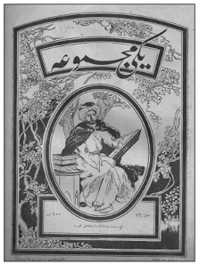
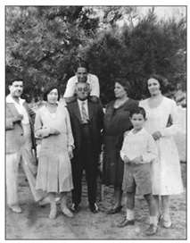
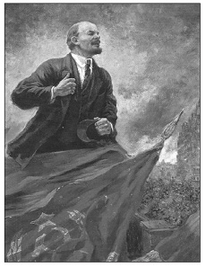
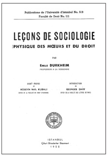
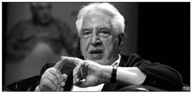
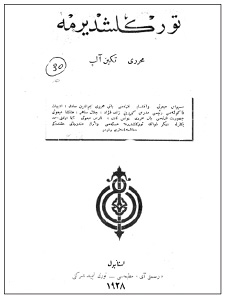
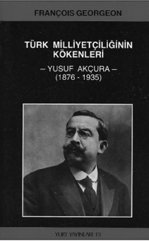
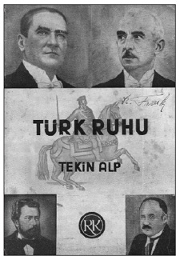

Durkheim gibi Gökalp’in sosyolojisi de son kertede ekonominin yerine ahlakı koyuyordu. Durkheim Toplumsal İşbölümü başlıklı eserinin son kısmında toplumların kendine özgü bir ahlakının bulunması gerektiğini vurguluyordu. Ahlak kurallarının amacı bireyleri kendi aralarında uyumlu kılmak, birbirlerine bağlamaktı. Başkasını gözeterek ya da hesaba katarak yapılan her eylem ahlaklıydı. İlkel toplumlarda bireyler arasında benzerlik bu dayanışmayı sağlıyordu. Toplumlar evrim geçirdikçe benzerlik üzerine kurulu mekanik dayanışma yerini organik dayanışmaya bırakıyordu. İşbölümü tıpkı kolektif vicdan gibi dayanışmayı sağlıyordu.
İşbölümünün ahlaksal bir değer taşımaması düşünülemezdi. Böylece iki değişik ahlak, iki farklı yoldan giderek aynı amaca ulaşıyordu. İşbölümünün bireyi ailesinden, akrabasından, gelenek göreneklerinden uzaklaştırdığı, fikirleri kişiselleştirdiği söylenebilirdi. Ancak mekanik dayanışmadan organik dayanışmaya geçerken kolektif bilinç etkisini kısmen sürdürüyordu. Benzerliğe dayanan dayanışmanın güç yitirmesine karşılık, organik dayanışmayla birlikte yeni bir ahlak anlayışı doğuyordu. Bu yeni ahlakın dayanak noktası uzmanlaşmaydı. Meslekler yeni ahlakın kaynağını oluşturuyordu. İktisatçılar gittikçe çıkara dayanan toplum yapılanmalarından söz ederek işbölümünün ortaya çıkardığı ahlak anlayışını kavrayamıyorlardı. Gündemdeki ahlak buhranının nedeni geçiş evresinde işbölümü ahlakının tam anlamıyla kurulamayışıydı. Ruhları derin bir boşluk sarmaktaydı. Bu bağlamda Toplumsal İşbölümü kitabı yeni bir ahlak arayışının ifadesiydi. Bu anlayış meslek zümreleriyle yakından bağlantılıydı. Aslında ahlak Osmanlı toplum düzeninde ayrıcalıklı bir konuma sahipti. Özellikle Tanzimat sonrası ahlak eğitim ve öğretimi okullarda giderek vurgulanmıştı.333II. Meşrutiyetle birlikte ahlakın yerini yavaş yavaş “terbiye” almıştı.
“Terbiye” büyük ölçüde Batı pedagojisinin bir uzantısıydı. Gökalp, yazılarında ahlak sosyolojisine geniş yer verirken, döneminde en büyük rakibi pedagojiden yola çıkan Sâtı Bey’di. Nitekim Gökalp’in öncülüğünde çıkan İctimaiyyat Mecmuası’nın yayın hayatına son vermesinin hemen ardından Aralık 1917’de Terbiye Mecmuası yayımlandı. O sırada Maarif Nezareti bünyesinde Fenn-i Terbiyye Encümeni kurulmuştu. “Terbiyye-i milliyye esaslarını tetkik ve tetebbu’ ve memâlik-i mütemeddinede fenn-i terbiyyeye aid neşr edilen asârın mühimlerini lisanımıza nakletmek ve fenn-i terbiyyeye aid bir kütüphane vücude getirmek ve fenn-i terbiyye muallimlerini gerek muhaberât ile gerekse neşrolunacak fenn-i terbiyye mecmuasına yazılacak makalât ile irşad etmek” üzere kurulan Encümen on beş günde bir toplanacaktı. Encümen’in reisi “Yeni Mekteb Müessisi ve Müdürü Sâtı Bey”di. Kuruluş evresinde üyeler ise Darülmuallimin-i Âliyye Fenn-i Terbiyye Muallimi İbrahim Alaaddin, Tatbikat Mektebi Müdürü İhsan, Darülfünûn Terbiyye Müderrisi İsmail Hakkı, Darülfünûn Ruhiyyat Müderrisi Muavini Haydar, Darülfunûn İctimaiyyat Müderrisi Ziya Gökalp, Darülmuallimîn-i Âliyye Edebiyat Muallimi Fazıl Ahmed, Darülfünûn Tarih-i Felsefe Müderris Muavini Mehmed Emin ve Darülfünûn İctimaiyyat Müderrisi Muavini Necmeddin Sâdık Beylerdi. Üyelerden Fazıl Ahmed Darülmuallimîn’deki ve Edebiyat Encümeni’ndeki görevlerinin yükünü gerekçe göstererek istifa etmiş, yerine Darülmuallimât-ı Âliyye Fenn-i Terbiyye Muallimi Şekib [Tunç] Bey seçilmişti. Encümen’in yayın organı Terbiye Mecmuası savaş ortamında ancak bir sayı yayımlanabilmişti.334Bu tek sayıda Sâtı Bey’in “İlim ve Ahlak - Fikir ve His”, İbrahim Alaaddin’in “Çocuk Ruhiyatında Usuller”, Ali Haydar’ın “Hıfz ve Tasavvur Enmuzecleri”, Mehmed Emin’in “Sultanilerde Terbiye ve Felsefe”, Mehmed Asım’ın “Darb-ı mesellerimiz ve Delâlet ve Kıymet-ı Tarihiyye ve Ahlakıyyeleri” ve Ahmed Cevad’ın Alain’den çevirisi “Çocuk Asrı” makaleleri yer almıştı.
Ferdi Kapitalizm - Devlet Kapitalizmi
Meşrutiyet’in ulus-devlet inşa sürecinde iki eksen hâkimdi. İlki Gökalp’in temsil ettiği “mefkûreci” ya da idealist yaklaşımdı. Diğeri ise ulus-devleti ekonomik tabana oturtma girişimiydi. Bu ikinci kanadın temsilcisi Yusuf Akçura’ydı. Tekin Alp ise her iki kanadı bağdaştırma çabası içerisindeydi. Bireycilikle toplumculuğun bağdaştırılması devletin aktif olarak iktisadi yaşama katılımını gerekli kılmıştı. Ancak devletin katılımıyla somutta ne kastedildiği pek açık değildi. Bireyin üstesinden gelemeyip de devletin üstlenmesi gereken girişimlerin niteliği Meşrutiyet yıllarında sürekli sorgulandı. Halkçılık küçük üreticilikle örtüşüyordu. Oysa bu ölçekte devletin bilfiil üretici olması beklenemezdi. Bireyin üstesinden gelemeyip devletin devreye gireceği girişimler ancak büyük ölçekte işletmelerdi. Diğer bir deyişle “sanayi-i cesime” diye adlandırılan geniş kapasiteler, fabrikalardı.

Gökalp’in solidarizm üzerine yazıları ağırlıklı olarak İttihatçı
yayın organı Yeni Mecmua’da yer aldı. Yeni Mecmua “Meşrutiyet
rönesansı”nın yayın organı sayılabilirdi. Özenli bir dergiydi ve
Osmanlı entelektüel düzeyinin vardığı evreyi ifade ediyordu.
Geniş ölçekli sanayileşme Meşrutiyet yıllarında giderek önem kazandı. Özellikle oluşmakta olan Türk-İslam burjuvazisinin yayın organı Sanayi dergisi sanayileşmenin önemini vurguluyor, Osmanlı topraklarında Batı Avrupa’da izlenen Sanayi Devrimi’ne benzer gelişmeleri bekliyordu. Ancak sanayileşme sermaye birikimiyle yakından bağlantılıydı. Geniş ölçekli fabrikalar büyük meblağlara ulaşan yatırımları zorunlu kılıyordu. Osmanlı’da bu tür bir birikimin olmayışı sanayileşmeyi engelliyordu. Öte yandan İttihatçı bazı çevrelerde sanayileşmenin doğuracağı toplumsal dengesizlikler de kaygı uyandırıyordu. Sanayileşme kapitalizmi hızla ülkeye sokacaktı. Bu da toplumsal sorunları beraberinde getirecekti. Hatta bazı yazarlara göre kapitalizm Türkiye’de etkilerini göstermeye başlamıştı bile.
Tekin Alp Yeni Mecmua’da yer alan bir yazısında Türkiye için “Garbi Avrupa usulünde kapitalizm devresi”nin başladığını ilan ediyordu. Osmanlı’da üretim araçlarını sermaye gücüyle bir araya getiren büyük şirketler, bu tür şirketleri kuran zenginler gittikçe çoğalıyordu. “Avrupa’da sosyalist, sendikalist, solidarist gibi say ü amel mürevvic ve müdafiilerinin hücumlarına hedef olan kapitalizm şekl-i iktisadisi bütün manasıyla hayat-ı iktisadiyyemize hâkim olmaya başlamıştı.”335 “Ferdî kapitalizm” diye adlandırılan bu tür gelişmelere solidaristler karşıydılar. Hele savaş sonrası “ferdî kapitalizm” tümüyle reddedilecek, devlet iktisadiyatı gereği “devlet kapitalizmi” savunulacaktı.
“Devlet kapitalizmi” Cihan Harbi yıllarında zorunluluklar sonucu gündeme gelmişti ve savaş sonrası birçok ülkede olduğu gibi Türkiye’de de uygulamaya sokulmuştu. Tanzimat’tan beri klasik iktisat anlayışı Osmanlı’da piyasayı belirleyici kılmıştı. Klasik iktisada göre devlet fabrika kuramaz, belediyeler ticaret yapamazdı. İktisadi teşebbüsler yalnız bireylerden ve şirketlerden beklenirdi. Milli iktisat anlayışı işte bu ilkeler nedeniyle geleneksel iktisadi düzenin yıkıldığını ve yeni bir iktisadi yaşama da girilemediğini kaydediyordu. Savaş sonrası Ziya Gökalp de bunu benimsemişti. Türkiye’de sanayileşmeye, büyük sanayinin oluşmasına şiddetle ihtiyaç vardı. Bu ise “asla fertlerin ve şirketlerin teşebbüsleriyle olamaz”dı. “Bilakis, hükûmetin, vilayet şûralarının, belediyelerin teşebbüsü ile memleketimizde her türlü sanayi teessüs edebilir”di.336O günün koşullarıyla Türkiye ne yerli şirketlerden büyük işler bekleyebilir, ne de siyasal müdahaleleri arkalarından sürükleyip getiren yabancı sermayeden medet umabilirdi.

Tekinalp 1883’te Serez’de bir hahamın oğlu olarak Moiz Kohen adıyla dünyaya geldi.
Selanik’te çıkan Asır gazetesinde yazarlığa başladı. Munis Tekinalp adıyla İttihatçıların
“milli iktisat” anlayışını savunan İktisadiyyat Mecmuası’nı çıkardı.
Türkiye’nin kendi yağıyla kavrulması yabancı tahakkümü altına girmesine tercih edilirdi.337Türkiye sanayileşebilmek için Avrupa’nın en ileri teknolojisini derhal benimsemeliydi. Bunu “fertlerin ruhunda kendiliğinden teşebbüs hassasının doğmasını” bekleyerek gerçekleştiremezdi. “O halde büyük sanayi’in bütün şubelerini memleketimize ithal edecek de ancak devlet olabilir”di. Devletin, livaların, nahiyelerin iktisadi teşebbüslere önayak olmaları gerekiyordu. “Türk devleti de müstahsil bir devlet olmak iktidarını haiz”di. Bu tür bir kapitalizm kendi kültür kodlarımıza da uygun düşüyordu. Gökalp’e göre “zaten Türkler tab’an devletçiydi”ler. Her yeniliğin, her ilerlemenin başlamasını devletten beklerlerdi. Hatta Türkiye’de devrimleri bile devlet yapardı. Avrupa emperyalizmi ferdi kapitalizme dayanıyordu. Oysa, Türkler devlet kapitalizmini kabul ederek “kapitalist namıyla açgözlü ve yırtıcı bir taifenin memleketimizde vücuda gelmesine mâni” olabilirlerdi.338Ama, bu aşamada da solidarizmin uzlaştırıcı anlayışı hâkim konumdaydı. Devlet kapitalizminde özel teşebbüs devre dışı bırakılmıyordu. Devlet “hususi teşebbüslerle rekabet etmemek şartıyla... fertlerin ve şirketlerin teşebbüs edemeyecekleri” fabrikaları kurabilecekti. Ayrıca devletin, vilayet şûralarının, belediyelerin kuracağı fabrikalar kârlı birer işletmeye dönüştürülecek, ardından bunlara kişi ya da şirketlerden talip çıkarsa onlara devredilerek, yenileri kurulacaktı.339Türkiye’de 30’lu yıllarda etkin olacak devletçiliğin temelleri işte bu tür bir anlayış sonucu atılmıştı.
Savaş ve Dayanışma Gereği
Cihan Harbi ertesi, diğer ülkelerde olduğu gibi, Türkiye’nin de önünde duran aşama, Gökalp’e göre, “meslek devri”ydi. Türkiye’de “sınıf devri” Tanzimat’la başlamış, “bir taraftan râiyyelik diğer cihetten de zımmîlik” kaldırılarak halkçılığa doğru iki büyük adım atılmıştı. Tanzimat ve Islahat fermanları, Tanzimat dönemi reformları ve nihayet Meşrutiyet, ayanlara özgü asalet ve özgürlükleri, ülkenin genel yönetimine katılma hakkını, diğer tabakalara, yani reayaya da tanımış, “avam” adı verilen kitle siyasal düzeyde ayanlara eşit kılınarak “halk” adını almıştı.
Siyasal hukukta eşitliğe yönelik Tanzimat ve Meşrutiyet reformları siyasal demokrasiyi, Gökalp’in deyimiyle “siyasî halkçılık - démocratie politique”i ülkeye getirmeye çalışmaktaydı. Siyasi halkçılık aynı zamanda kapitülasyonların doğurduğu yerli-yabancı ve Türk-İslam unsuru-gayrimüslim cemaat ayrımlarına da son vermekteydi. İttihat ve Terakki Cihan Harbi’ne girer girmez kapitülasyonları tek taraflı olarak kaldırmıştı. Gökalp’e göre siyasi halkçılık için bu son derece önemli bir karardı. Böylece ayrımcılığa neden olan her türlü imtiyaz kalkmış oluyordu. Artık Türkiye siyasal açıdan tümüyle demokratik, yani “halkçı” bir toplum olmuştu. Gökalp’in siyasî halkçılık anlayışı bir yandan derebeyi diye nitelediği ayanların siyasal ayrıcalıklarını kaldırmakta, öte yandan Türkiye’nin siyasal ve ekonomik bağımsızlığını sınırlayan, yabancılara ve “gayrimüslim milletler”e ayrıcalık tanıyan kapitülasyonlara son vermekteydi.340
Gökalp’e göre siyasî halkçılık döneminde siyasal tabakalar ya da katmanlar kalmamakla birlikte bir dizi iktisadi tabaka hâlâ mevcuttu. Bu tabakalar büyük burjuvazi [büyük eşraf], küçük burjuvazi [küçük eşraf] ve gündelikçilerden oluşan sınıflardı. Meslek devrinin temel işlevi bu tür sınıfları ortadan kaldırmaktı. Bu nedenle meslek devrinde halkçılık yeni bir boyut kazanacak, toplumsal yönü, “ictimaî halkçılık” gündeme gelecekti. Gökalp “ictimaî halkçılık”la solidarizmi kastediyordu. Solidarizm hareketi, ona göre, eskiden var olan siyasal ayrıcalıkların kaldırılması gibi, iktisadi sınıfların da toplumdan silinmesine çalışıyordu. Siyasî halkçılık herkesi siyasal hukuk açısından “ayan”lar düzeyine çıkarmıştı. Diğer bir deyişle siyasal eşitliği sağlamıştı. İctimai halkçılık ya da solidarizm, tüm insanları “terbiyevi ve iktisadi mazhariyetler” açısından burjuvaziye ya da eşrafa eşit kılmaktı. Halkçılığın esası, toplumda semiyye, kast, tarik, ocak, sınıf adı altında bir dizi tekelci ya da ayrıcalıklı zümre ve tabakaların bulunmamasıydı.341
Gökalp’in görüşlerine benzer bir yaklaşım Halk Fırkası’nın, ilk yedi maddesi parti ilkelerine ayrılmış olan 1923 nizamnamesinde benimsenecekti. Fırka nizamnamesinin ikinci maddesi şu satırlara yer veriyordu: “Halk Fırkası nazarında halk mefhumu, herhangi bir sınıfa münhasır değildir. Hiçbir imtiyaz iddiasında bulunmayan ve umumiyetle kanun nazarında mutlak bir müsavatı kabul eden bütün fertler halktandır. Halkçılar, hiçbir ailenin, hiçbir sınıfın, hiçbir cemaatin, hiçbir ferdin imtiyazlarını kabul etmeyen ve kanunları vazetmekte mutlak hürriyet ve istiklal tanıyan fertlerdir.” Bu ilke Halk Fırkası’nın 1931’deki ilk programında da tekrarlanacaktı: “Kanunlar önünde mutlak bir müsavat kabul eden ve hiçbir ferde, hiçbir aileye, hiçbir sınıfa, hiçbir cemaate imtiyaz tanımayan fertleri halktan ve halkçı olarak kabul ederiz.”342
Cihan Harbi yıllarında Gökalp’i etkileyen gelişmelerden bir diğeri 1917 Devrimi ve Rusya’da proletarya diktatörlüğüne yönelişti. Tıpkı yukarıda Tekin Alp’in görüşleri paralelinde Gökalp de Bolşeviklere karşı tavır alıyordu. Ona göre, gerek kapitalist toplum, gerekse sosyalist toplum sınıfsal tabana oturtulmaları nedeniyle gerçek halkçılığa ters düşmekteydi. Siyasi düşünce bir sınıfın çıkarına, diğer sınıfın aleyhine olmamalıydı. Burjuva siyaseti, amele ile köylünün aleyhinde olduğu için eşitlik ve özgürlük anlayışına tersti. Halkı amele ve köylüden ibaret addeden Bolşevik siyaseti yine adalet ve insanlıkla bağdaşmıyordu. Gerçek halkçılık herkesi halktan görmekti. Hükümdar ve ailesi halktan olduğu gibi fabrikatör, arazi sahibi, filozof, şair de halktandı. Halk arasında gerçek bir eşitliği, özgürlüğü ihdas etmek gerekliydi. Ancak, bunu gerçekleştirirken yanlış kuramların peşine düşerek masum insanları mazlum haline koymamak gerekiyordu. Bolşevik rejimi bu tür zulümler yaptığı için gerçek halkçılar onlara karşı tavır alıyorlardı.343

Türkiye’de solidarizmin tartışıldığı dönemde kuzeyde, Çarlık Rusyası yıkılmış, yerine toplumsal
mülkiyet esası üzerine kurulu Bolşevizm gelmişti. Osmanlı solidaristleri bu gelişmeler
karşısında sosyalizmle solidarizm arasındaki farkı vurgulamak gereği duymuşlardı.
Gökalp’in sınıfsız toplumu son kertede bir tür korporatizme varıyordu. Dönemin “meslekçi” yönelimlerini de içeren Gökalp’in halkçılığı tarihsel evrimde sınıflı toplumları izleyecek “meslek devri”nin toplum felsefesini oluşturuyordu: Toplumsal sınıflar aralarında uzlaşamayan, sürekli sınıf çatışmalarına yol açan bölücü öğelerdi; toplumsal işbölümü esası üzerine kurulmuş meslek zümreleri ise uzlaşan, bağdaşan kurumlardı. Gökalp’e göre, ayırıcı, parçalayıcı, sürekli çelişen toplumsal sınıfları içeren sınıflı toplumlar giderek yok olacak, yerlerini toplumsal dokusu meslek zümreleri olan meslek toplumlarına bırakacaktı. Böylece insanlık yaşamında “ictimai Darwinizm” son bulacak, ebedi barış hüküm sürmeye başlayacaktı. Gökalp halkçılık görüşlerini şu satırlarla özetliyordu: “Bir cemiyetin dahilinde birtakım tabakaların yahud sınıfların bulunması, dahili müsavatın bulunmadığını gösterir. Binaenaleyh, halkçılığın gayesi, tabaka ve sınıf farklarını kaldırarak, cemiyetin birbirinden farklı zümrelerini, yalnız işbölümünün doğurduğu meslek zümrelerine hasretmektir. Yani halkçılık, felsefesini bu düsturda icmâl eder: Sınıf yok, meslek var!”
Gökalp’in benimsediği halkçılık, Durkheim’in toplumsal işbölümü ilkesiyle “şe’niyyet” diye adlandırdığı Osmanlı toplumunun esnaf geleneğinin bireşimini içeriyordu. Tüm yaşamı boyunca Doğu mistisizmiyle Batı pozitivizmini bağdaştırma çabası içinde olan Gökalp mesleki teşkilata dayanan halkçılık görüşleriyle Birinci Dünya Savaşı ile uygulamaya sokulan “milli iktisat” politikasının yol açtığı “ihtikâr-spekülasyon” ortamına da bir çözüm getirmeyi amaçlıyordu. Savaşın doğurduğu ekonomik bunalım Türk-İslam eşrafın kısa sürede birikime gitmesini sağlamıştı. Ancak, olağanüstü koşullarda gerçekleştirilen yoğun bir birikim gelir bölüşümünde çarpıklıkları abartmış, “331, 332, 333 zenginleri, spekülasyon erbabı, muhtekir” diye adlandırılan yeni zenginler türemişti. Gökalp ve çevresi, Tekin Alp’in kapitalistleşme diye adlandırdığı bu gelişmeleri, meslek ahlakının yetersizliğine bağlıyor, ahlak sosyolojisini ivedi gündeme alarak, bir dizi ahlaki yaptırım gücüyle, toplumdaki ekonomik kargaşanın giderilmesini öneriyordu.

Hüseyin Nail Kubalı’nın, Durkheim’in yeğeni, ünlü sosyolog ve antropolog
Marcel Mauss’dan temin ettiği ders notlarını Leçons de sociologie – Physique des
moeurs et du droit başlığıyla Fransızca olarak ilk kez Türkiye’de yayımlayacaktı.
Meslek teşkilatının toplumsal dayanışmadaki önemini Gökalp şöyle vurguluyordu: “Halkçılık ayırıcı zümreler yerine, cemiyetin fertlerini birbirine sıkı rabıtalarla birleştiren meslek zümrelerinin kaim olmasına çalışıyor. Çünkü, cemiyet ictimai bir uzviyete benzetilirse, bu uzviyetin birer hayati vazife ifa eden hakiki uzuvları ancak meslek zümreleri olabilir. Bundan dolayıdır ki cemiyetler tekâmül ettikçe işbölümü ve ihtisas müesseseleri gittikçe derinleşiyor ve mesleki teşkilatlar gittikçe daha sıkı bir tesanüt, daha büyük bir ehemmiyet kazanıyor.” İşte bu görüşler Durkheim’in meslek zümreleri üzerine kurulu ahlak sosyolojisiyle tıpatıp örtüşüyordu. Organik dayanışma meslek ahlakını gerekli kılıyordu. Bu bir anlamda çağdaş toplumda bireyin sorumluluğunu gündeme getiriyordu. Meslekler arasında dayanışma aynı zamanda yeni bir ahlak anlayışını gerekli kılıyordu. Tıpkı Durkheim gibi, II. Meşrutiyet halkçıları meslek zümrelerinin korporasyon şeklinde örgütlenişinin mesleki vicdana yol açacağını ileri sürüyor, mesleki ahlakın yaptırım gücünün ekonomik yaşamda her türlü yolsuzluğu önlemeye yeteceği görüşünü savunuyorlardı. Necmettin Sâdık [Sadak]3441917 yılının sonlarına doğru meslek ahlakının toplum yaşamındaki önemini şu satırlar açıklıyordu: “Taksim-i âmal [işbölümü] neticesinde, vazifeleri itibariyle ayrılan fertler, birtakım zümreler teşkil ediyorlar; bunlara mesleki zümreler [groupements professionnels] veyahud korporasyon namı veriliyor. Bu suretle yeni bir manevî hal hâdis oluyor. Vazifelerin tehâlüfüyle [farklılaşmasıyla] umumî vicdanın yanında bir de zümrenin hususî yani meslekî vicdan, sırf o mesleğe mahsus bir ahlak teşekkül ediyor. Bir meslek dahilinde aynı fikrî ve manevî hayatı yaşayan, aynı duygularla mütehassis olan, aynı manevî menfaatler arkasında koşan meslektaşlar arasında yeni bir hayat hasıl oluyor. Ve bu hayat fikri, ahlaki, bedii duygularıyla ferde tahakküm ediyor.” Bu satırlar Durkheim’in kaleminden çıkıyor gibiydi. Durkheim’in yıllar sonra Hüseyin Nail Kubalı tarafından ilk baskısı Türkiye’de yapılan Leçons de sociologie345 [Sosyoloji Dersleri] işte bu tür bir ahlak anlayışını savunuyordu. Durkheim sosyolojisinin Türkiye’de halkçılığın doğuşunda ne denli önemli bir rolü olduğunu bu kitap net bir biçimde ortaya koyuyordu.
Türkiye’de halkçılığın Durkheim’e uzanan fikir temelleri Toplumsal İşbölümü’nün yanı sıra Sosyoloji Dersleri’ne dayanıyordu. Bu son eserin ilk kez Türkiye’de yayımlanmış olması ayrı bir önem arz ediyordu. İstanbul Üniversitesi Hukuk Fakültesi tarafından yayımlanan bu eseri bilim dünyasına Hüseyin Nail Kubalı kazandırmıştı. Kubalı 1934’te Paris’te “Fransız Sosyoloji Okulunun Öncülerinde Devlet Fikri” [L’idée de l’État chez les précurseurs de l’École sociologique française] başlıklı doktora tezini hazırlarken Émile Durkheim’in yeğeni Marcel Mauss’a başvurmuş ve bu vesileyle Durkheim’in yayımlanmamış yazmalarından haberdar olmuştu. İleri tarihlerde Marcel Mauss’un eşi ve Durkheim’in kızından, Mauss’un kitaplığını oluşturan eserler ve belgelerin Musée de l’Homme’a bağışlandığını duyup bunların izini sürmüştü. Ders notlarının İstanbul Hukuk Fakültesi’nce yayımlanmasını Durkheim’in kızı Mme. Jacques Halphen de uygun görmüştü. Kasım 1898-Haziran 1900 arası verilen bu ders notları böylece yarım yüzyıl sonra sosyoloji literatürüne kazandırılmıştı. Durkheim’in öğrencisi ve dostu ünlü sosyolog Georges Davy notları yayımlanmadan önce son kez gözden geçirmişti. Ayrıca kitapta Davy’nin bir giriş yazısı yer almıştı. Sosyoloji Dersleri, İstanbul Hukuk Fakültesi tarafından 1950 yılında Fransızca yayımlandıktan 56 yıl sonra Ali Berktay’ın çevirisiyle Türkçeye kazandırılmıştı.
Hüseyin Nail Kubalı’nın önsözü Durkheim sosyolojisinin Türkiye’de edindiği derinliği sarih bir biçimde ortaya koyuyordu: “Büyük Fransız sosyoloğun ölümünden sonra çıkan bu eserin Türkiye’de yayımlanması asla bir rastlantı değildir. Bir tür kültürel determinizmin sonucu olduğu bile söylenebilir. Çünkü Türkiye’de, Le Play, Gabriel Tarde, Espinas ve diğerlerinin yanında Émile Durkheim sosyolojisi, özellikle tanınmış Türk sosyoloğu Ziya Gökalp’in çalışmalarından bu yana hayat hakkı bulmuş tek akımdır. Gerçekten de bizde Durkheim okulunun izini şu veya bu ölçüde taşıyan sosyologların (ben de bunlardan biriyim) sayısı hiç de az değildir. Bu yüzden Türkiye’nin kendisini, deyim yerindeyse, bu sosyolojinin vârislerinden biri olarak görmesine şaşmamak gerekir. Bu nedenle bu eserin yayımlanması ülkede haklı bir memnuniyetle selamlanacak ve ülke tarihinde bir eşine daha rastlanmayan bu olay gereğince takdir edilecektir. Türkiye’nin bilim kurumlarından birinin çabasıyla dünya çapında üne sahip bir Avrupalı bilim adamının hiç yayımlanmamış bu eseri Türkiye’de yayımlanmaktadır.”346
Durkheim’in gerek Toplumsal İşbölümü’nde gerekse Sosyoloji Dersleri’nde toplum kargaşalığının kaynağını ahlaki nedenlere bağlayan görüşleri, Gökalp’in öteden beri savunduğu “hey’i [korporatif] cemiyet” anlayışında yankı buluyor, savaşın yitirildiği günlerde, siyasal devlet aygıtının mesleki ilkelere göre düzenlenmesi giderek yandaş topluyordu.
Milletçilik ve Korporatif Devlet
Türkiye’de milliyetçilik dendiğinde ilk akla gelen isim Ziya Gökalp’tir. Ancak “milliyetçilik” İttihatçı ideoloğun ender kullandığı bir sözcüktü; her zaman “milletçilik” sözcüğünü tercih ediyordu. “Milletçilik”,347 “Milletçilik ve Beynelmilliyetçilik”,348 “Milletçilik ve Cemaatçilik”349Yeni Mecmua’da konu ile ilgili yazılarının başlıklarıydı. Milletçilik, Gökalp için, ulus-devlet [nation-state, état-nation] diye bilinen devlet modelini açıklayıcı bir kavramdı. Milliyetçilik bir ideoloji iken milletçilik bir olguydu. Ulus-devlet inşa süreciydi. Milliyetçiliğin bağrında yeşerdiği maddi ortamı açıklıyordu. Gökalp’te, düşünce akımı olarak Türk milliyetçiliği Türkçülük olarak ifade ediliyordu. Ya da daha soyut bir düzeyde ele alındığında “milliyet mefkûresi” olarak karşımıza çıkıyordu.

Şerif Mardin’e göre Batı’ya giden Türk aydını sosyalizm-solidarizm ikileminde ikincisini seçmişti;
solidarizm bu kadroların kolayca kabul edebilecekleri, eskiden beri bildikleri,
kendi toplumlarında hâkim olan değerlere benzeyen sosyal değerler getirmişti.
Türkçülük, Gökalp’in düşünce sisteminde bugünkü anladığımız milliyetçilikten çok daha kapsamlı bir fikir hareketiydi. Siyasal boyutu ötesinde toplumsal boyutu da olan bir düşünce yumağıydı. Gökalp’e göre, II. Meşrutiyet’le birlikte bir “siyasi inkılab” gerçekleşmişti. Siyasal devrim için “hürriyet, müsavat, uhuvvet” türü meşrutiyetin ruhunu simgeleyen “kuvvet fikir”lerin yayılması yeterliydi. “Kuvvet fikir” Gökalp’in Alfred Fouillée’den esinlendiği bir kavramdı. İnkılabın ikinci aşaması “ictimaî inkılab”dı ve 1910’lu yılların başında Gökalp, Osmanlı için bir toplumsal devrim öngörmekteydi. “İctimaî inkılab”da bu kez “kuvvet his”lerin gelişme ve yükselmesi gerekiyordu. “Kuvvet his” yine Alfred Fouillée’nin geliştirdiği kavramlardandı. Gökalp, toplumsal devrimi “eski hayat”ı beğenmeyerek, yeni bir hayat yaratmak olarak tanımlıyordu. Yukarıda ayrıntılarıyla ele alındığı gibi “eski hayat” yeni bir yaşam tarzı yaratmakla sona eriyordu; “yeni hayat” Osmanlı için kurtuluş yoluydu. Gökalp’e göre yeni hayat, “millî” bir yaşam tarzıydı. Sonradan kendi de belirttiği gibi Türkçülük adını alacaktı. Görüldüğü gibi Türkçülük, Gökalp’te salt bir siyasal platform olmaktan çıkmakta; bir toplumsal dönüşüm, kendi deyimiyle bir “ictimaî inkılâb” anlamına gelmekteydi.
Gökalp “Milletçilik ve Beynelmilliyetçilik” başlıklı makalesinde Türkçülüğün toplumsal içeriğini açık bir biçimde dile getiriyordu: Türkçülüğün esası “halkçılık ve milletçilik mefkûreleri”ydi. Toplumsal evrimin değişik evrelerinde halkçılıkla milletçiliğin birlikte görüldüğünü kaydeden Gökalp, halka değer verilmediği zamanlarda millete de aynı gözle bakıldığını, halk güçlenince millet fikrinin de aynı oranda pekiştiğini söylüyordu. Bu nedenle halkçılıkla, milletçilik arasında sıkı bir dayanışma, kendi deyişiyle “tesanüd” vardı. Gökalp’e göre, halkçılıkla milletçilik aynı fikrin, “müsavat mefkûresi”nin iki farklı tecellisinden ibaretti. Toplumların içsel eşitliğini, yani “dahilî müsavat”ını halkçılık; dışsal eşitlik ya da “haricî müsavat”ını milletçilik sağlıyordu. Bir toplumda tabakaların ya da sınıfların bulunması “dahilî müsavat”ın bulunmadığını gösteriyordu. Bu nedenle Türkçülüğün dayanak noktalarından halkçılık, tabaka ve sınıf farklarını kaldırarak toplumun farklı zümrelerini yalnız işbölümünün doğurduğu meslek zümrelerine indirgiyordu. Yukarıda belirtildiği gibi “sınıf yok, meslek var” Gökalp’in düsturuydu.
Gökalp’in önerdiği ulus-devlet modeli, meslek zümrelerinden oluşan bir devletti. Diğer bir deyişle korporatif bir devlet modeli gündemdeydi. Gökalp, korporatif bir ulus-devlet önerisini ilk kez İslam Mecmuası’nda işliyordu. İttihatçı düşünür artık Durkheim’in sosyolojisini benimsiyor, Fransız üstadının korporatif eğilimlerini geleneksel Osmanlı lonca korporatizmiyle pekiştiriyordu. Dergide yer alan yazısında Osmanlı lonca geleneğiyle Durkheim’in korporatif işbölümü ilkesini aynı potada eritiyordu. Cihan Harbi yıllarında Gökalp’in önerisi ulusal düzeyde meslek örgütlerine yaslanan korporatif bir düzendi.
Durkheim’e göre, korporasyon ulus-devlette siyasal yapılanmanın temelini ya da belli başlı temellerinden birini oluşturuyordu. Korporasyonlar devletin temel siyasal birimleri, temel ayrımlarıydı. Sanayi toplumunun gelişmesiyle eski siyasal yapının giderek gücünü yitirdiğini savunan Durkheim, bölgesel ayırımın önemini kaybettiğini, bireyin bölgesel ayırıma bağlantısını her geçen gün biraz daha yitirdiğini ileri sürüyordu. Toplum bugünkü gibi yan yana konmuş bölgeler toplumu olmaktansa, geniş bir ulusal korporasyonlar sistemine dönüşmeliydi. Durkheim’in önerdiği korporatif modelde korporasyonlara zorunlu üyelik uygulanacak, aynı mesleğe mensup olmaktan doğan bir dayanışma, “entelektüel ve ahlaki türdeşlik” sağlanacaktı. 1910’lu yıllardan beri Türkiye’de toplum felsefesine damgasını vuran Durkheim, korporatizm konusunda Saint Simon, Proudhon ve Louis Blanc’dan esinlenmişti. Eserlerinde işlevsel temsile ağırlık veren bir siyasal sisteme yöneliyordu.
Büyük ölçüde Durkheim’in görüşlerinden etkilenen Gökalp de, korporasyonu siyasal örgütün vazgeçilemez bir unsuru olarak görüyor, çizdiği ulus-devlet modelinde, Durkheim’in korporatif devlet modelinden esinleniyordu: “İctimai nev’iler”350başlıklı yazısına göre, Türk ulusu camia toplum [camiavî cemiyet] türüne dahildi ve gelecekte korporatif toplumlar [hey’î cemiyet] arasında yer alacaktı. Camia toplumu kentlerde toplumsal işbölümü sonucu esnaf korporasyonlarından oluşmuş, yerel derebeylerin egemenliğinden kurtularak, kendi kendini yönetmeye başlamış, aynı zamanda derebeyine karşı merkezi otoriteyle birleşmiş bir “millet” türüydü. Korporatif toplum ise, başkentte ulusal nitelikte örgütlenmiş esnaf korporasyonlarından oluşuyordu.
Gerek camia [topluluk] toplumu, gerekse korporatif toplum loncalar üzerine kurulmuştu. Ancak camia toplumunda loncaların etkinliği yöreseldi. Bunların yaşam ve eylemleri toplulukla sınırlıydı. Bu nedenle camia toplumundaki loncalara camia korporasyonları deniyordu. Korporatif toplumda ise korporasyonlar, başkentte seçtikleri temsilciliklerden oluşan konfederasyon meclisleriyle ulusal nitelik kazanıyorlardı. Gökalp, ekonomik gelişimin son evresi olarak gördüğü “milli iktisat” dönemini ulusal düzeyde örgütlenmiş esnaf korporasyonlarının yönetimiyle noktalıyordu. Milli iktisatta, cemaat ile şehir ekonomileri kaynaşıyordu. Gökalp’in meslekçiliği toplumu bir organizmaya benzetiyordu. Meslek zümreleri bu organizmanın hayati görevler üstlenmiş organlarıydı. Toplumun gelişiyle işbölümü ve uzmanlaşma derinleşiyordu. Meslek örgütleri arasında giderek daha sıkı bir dayanışma doğuyordu. Toplum bireyleri meslek zümreleri aracılığıyla birbirlerine bağlanıyorlardı.
Gökalp’in korporatif ulus-devlet modeli iktisadi konularda yazdığı makalelerde de belirgindi. Oluşturulacak bir “millî iktisat nezareti” ulusun bir ekonomik organizmaya [uzviyet-i iktisadiyye] dönüşümünü sağlayacaktı. İktisadiyyat Mecmuası’nda önerdiği “Millî İktisat Nezareti” esnaf korporasyonlarını kent düzeyinden bir üst düzeye çıkararak ulus düzeyinde örgütleyecekti. İktisadi yaşamın en son aşaması milli iktisadı ulusal düzeyde örgütlenmiş esnaf korporasyonları yönlendirecekti. Milli iktisat, cemaat ve şehir ekonomilerini bütünleyecekti.
Gökalp, korporatif ulus-devlet modelini Cumhuriyet’in ilan edildiği yıl yayımlanan Türkçülüğün Esasları351 başlıklı yapıtında da ayrıntılı bir şekilde ele alacaktı. Türkçülüğün Esasları korporatif dönüşümlerin zorunluluğunu vurguluyordu. Yöresel esnaf loncalarının yerine merkezi milli loncalar öneriyordu. Gökalp’in modelinde kentlerde bütün loncaların temsilcilerinden oluşan birer merkez heyeti vardı. Buna “iş borsası” adını veriyordu. Bu örgütün görevi kentteki loncaların ortak işlerini görmek ve kentin iktisadi yaşamını düzenlemekti. Böylece kentsel düzeyde yatay örgütlenme gerçekleşiyordu. Loncalar ayrıca dikey olarak, ulusal düzeyde örgütleneceklerdi. Kentlerde, örneğin debbağ loncaları kurulacak, bunlar kendi aralarında federasyona giderek başkentte bir Debbağ Federasyonu Merkez-i Umumiyyesi oluşturacaklardı. Böylece tüm loncaların devlet merkezinde bir genel merkezi bulunacaktı. Lonca genel merkezlerinin seçtikleri temsilciler bir araya gelip loncalar konfederasyonunu kuracaklardı. Konfederasyon ise Millet Meclisi üyelerini seçecekti. Tüm bu satırlar okuru Durkheim’in Sosyoloji Dersleri’ne götürüyordu. Korporasyonların ufku kent surlarıyla sınırlı kaldığı sürece, tıpkı kent gibi geleneğe kolayca tutsak olacaktı. Ama ulusal korporasyonlar böyle bir tehlikeyle karşı karşıya kalmayacaktı. Çaplarının genişliği ve karmaşıklığı onları her türlü durağanlıktan koruyacaktı.352

Sivas Mebusu ve Akşam gazetesi başyazarı Necmeddin Sâdık, Edebiyat Fakültesi Reisi Fuat
Köprülü, Celâl Sahir, Menteşe Mebusu Cumhuriyet gazetesi başyazarı Yunus Nadi, Kars
Mebusu Ahmed Ağaoğlu’nun görüşlerinin yer aldığı Tekin Alp’in Türkleştirme başlıklı eseri.
Gökalp’in ulus-devletinde karma bir korporatif model hâkimdi. Burada büyük ölçüde Durkheim’in dayanışma, solidarite üzerine yapmış olduğu ayırım geçerliydi. Millet Meclisi’nde mekanik dayanışmayı simgeleyecek olan “liva mebusları”nın yanı sıra, organik dayanışma temsilcileri olarak “meslekî mebuslar” yer alacaktı. Liva mebusları genel seçimlerle gelirken, meslekî mebuslar heyetleri tarafından, diğer bir deyişle işbölümü esası üzerine kurulu meslekî zümreler tarafından seçileceklerdi. Gökalp, Cumhuriyet’in ilk seçimlerinde, Büyük Millet Meclisi’ne elli adet mesleki mebusun gönderilmesini öneriyordu.
Gökalp Türkçülüğünün temel dayanak noktalarından biri halkçılıktı. Halkçılık toplumun bireylerini bir diğerine bağlayan meslek zümrelerinin sınıf ayırımı yerine geçirilmesini öneriyordu. Toplum düzenli, dengeli bir yapıya kavuşuyordu. Türkçülüğün diğer boyutu, Gökalp’e göre milletçilikti. Milletçilik her milletin kendi başına bir devlet olmasını gerektiriyordu. İmparatorlukların varlığı milletlerin uluslararası hukuk açısından eşit olmadıklarını gösteriyordu. İmparatorluk birçok milletin tek yönetim altında yaşaması demekti. İmparatorlukta bir dil, bir din, bir örf hâkim olduğu için, imparatorluğu oluşturan milletlerden yalnız biri kültürel bağımsızlığa sahipti. Diğerleri bundan mahrumdu. Milletlerin uluslararası hukukta eşit haklara sahip olabilmeleri, imparatorlukların çözülmesine ve milletlerin kendi başlarına buyruk devlet olmalarına bağlıydı. Halkçılığın “sınıf yok, meslek var” düsturuna karşı milletçiliğin düsturu “imparatorluklar yok, millî devletler var” olacaktı. Diğer bir deyişle, ulusal bağımsızlık Gökalp milliyetçiliğinin temel dayanak noktalarından birini oluşturuyordu.
Meslekçilik ve Ahlak
Osmanlı düşününde çağdaş korporatist görüşler 1908 Jön Türk Devrimi ertesi, ardı arkası kesilmeyen savaşların yarattığı toplumsal çöküntünün ve uluslaşma sürecinin gerekli kıldığı milli iktisat arayışlarının bir ürünüydü. Meşrutiyet korporatizmi Osmanlı lonca geleneğiyle Fransız korporatizminin sosyo-psikolojik temelini oluşturan solidarist düşünün bireşiminde benliğini bulmuştu. Gökalp’in düşüncesindeki Osmanlı esnaf geleneğini ve meslek zümrelerinin etkinliğini bir ölçüde “ümmet strüktürü”nün devamı olarak algılamak mümkündü. Nitekim Şerif Mardin, Din ve İdeoloji adlı eserinde Türk milliyetçiliğinin temellerini atmış olanlar ve bu arada Ziya Gökalp’in ümmet strüktüründen sandıkları kadar uzaklaşmadıklarını, Gökalp’in dine önem vermesinin ve tesanütçülüğe bağlanmasının bundan ileri gelen bir yönü olduğunu yazmıştı. Mardin’e göre Gökalp, Durkheim sosyolojisine yine kendi toplumunun ideolojik gözlükleriyle bakmıştı. Bu ilişki Cumhuriyet seçkinlerinde de seziliyordu: Türkiye’de sınıf ayrılıkları olmadığı ve olmayacağı fikrinin vurgulanması, işlevi ümmete benzer bir toplumsal hissin toplum bağı olarak sürdürülmesiydi.353Şerif Mardin “ümmet strüktürü”nü Ahmed Rıza, Abdullah Cevdet gibi diğer Osmanlı aydınlarında da görüyordu.354
Meşrutiyet’le birlikte eski lonca örgütleri kaldırılmış, küçük üreticiliğin “çağdaşlaştırılması” düşünülmüştü. 25 Şubat 1910 günlü Esnaf Cemiyetleri Talimatnamesi kethüdaların görevlerine son vermiş, Şehremaneti’nin denetimi altında esnaf cemiyetlerinin kurulmasını öngörmüştü. Nitekim bu tarihten Cihan Harbi’nin ilk yılına değin İstanbul’da elli esnaf cemiyeti kurulmuştu. Bütün bu cemiyetler Esnaflar Cemiyeti çatısı altında birleşiyordu.
Selanik’in yitirilişi ertesi Merkez-i Umumi’nin İstanbul’a nakli, İttihat ve Terakki’nin karar organlarında Müslüman-Türk esnaf etkinliğini artırdı. İstanbul tüccarı “kozmopolit”ti. İttihat ve Terakki’nin omuz verdiği milli iktisatla bağdaşmıyordu. İttihat ve Terakki Cemiyeti’nin İstanbul örgütü uzun yıllar esnaf cemiyetlerine yaslanmış, özellikle Cihan Harbi yıllarında kentin iaşe sorununu bu örgütler aracılığıyla çözümlemeyi denemişti. Esnaf cemiyetlerinin başına Cemiyet yandaşı “kâhya”lar getirilmiş, “fırka fedaileri” esnaf örgütlerinden sağlanmıştı. İttihat ve Terakki Cemiyeti, Meşrutiyet yılları boyunca esnaf örgütlerini ulus-devlet süreciyle uyumlamaya çalışacaktı. Mebusan Meclisi’ne verilen önergelerin birinde fütüvvet ilkelerinin esnaf yaşamına, günün koşullarına uygun değişikliklerle uygulanması savunuluyordu. Genel Merkez’de Ziya Gökalp esnaf örgütleriyle yakından ilgileniyordu. Baha Sait Ankara’ya gönderilmiş, esnaf örgütlerinin evrimi ve Ahilerin son Ahu babalarının kurumları kendisine inceletilmişti.

Savaş ekonomisi spekülatif girişimlere, istifçiliğe, karaborsacılığa
prim tanımıştı. Yusuf Akçura’nın deyimiyle, “Her yerde ve her zaman
olduğu gibi, Türk kapitalizması dahi, ilk devresinde kâr ve zevkten
gayrı esas ve gaye gözetmemeye temayül ediyordu.”
Ancak esnaf örgütlerinin ekonomideki yeri konusunda İttihat ve Terakki içinde görüş ayrılıkları vardı. Esnaf örgütlerini fiilen denetleyen cemiyetin İstanbul murahhası Kemal Bey, bu kuruluşların giderek anonim şirketlere dönüştürülmesini savunuyor, küçük sermayelerin artık 20. yüzyılda yeri olmadığı görüşünü ileri sürüyordu. Meşrutiyet’in ilk yıllarında Hamal Esnafı kâhyalığı yapan Kemal Bey, Cihan Harbi yıllarında önce esnaf cemiyetleri aracılığıyla Heyet-i Mahsusa-i Ticariyye’yi yönetecek, daha sonra İstanbul Mıntıkası İaşe Müdürlüğü’ne ve nihayet İaşe Nazırlığına getirilecekti. Kemal Bey Cihan Harbi yıllarında “milli” anonim şirketlerin kurulmasına önayak olmuş, Milli İktisat Bankası’nı kurdurtmuştu. Ülke geleceğini sermaye birikiminde ve “teşkilatlanma”da gören Kemal Bey, savaş yıllarında devlet eliyle özel girişimciliğin başını çekmişti. Kemal Bey’in esnaf üzerindeki etkinliği Cumhuriyet’in ilk yıllarında da sürmüştü.
Meşrutiyet korporatizmi ise Kemal Bey’in görüşlerine karşıt bir kesimden kaynaklanıyordu. Kemal Bey, esnaf için pragmatik çözümler öneriyordu. Küçük üreticiyi daha büyük ölçeklerde örgütleyerek ülke ekonomisinde etkin kılmayı amaçlıyordu. Oysa, Ziya Gökalp’in başını çektiği meslekçi çözüm, toplumun tüm kesitlerini kapsayan ve kuramsal yönü ağır basan bir açılımdı. Gökalp’in meslekçiliği küçük üreticiliğin sürdürülmesinden yanaydı. Bu görüşleri savunan kesim ahlak sosyolojisinden esinleniyor, dönemin “ictimai iktisat” görüşleriyle Osmanlı meslek geleneğini uyumlu kılmaya çalışıyordu. Osmanlı’yı çöküntüye sevk eden ahlak bunalımıydı. Savaşın doğurduğu ekonomik bunalım, spekülatif girişimler sonucu spekülatif kazançların oluşmasına neden olmuştu. Bu kesime göre savaş yıllarında Osmanlı toplumunda sefaletin yanı sıra “harp zenginleri”nin ortaya çıkması ahlak yetersizliğinin sonucuydu.
1908 Jön Türk Devrimi ertesi, Trablusgarp, Balkan ve Dünya Savaşları Osmanlı Devleti’ni siyasal çöküntünün eşiğine getirecekti. Yüzyılların Osmanlı toplumsal düzeni çözülmeye başlamıştı. Ayrılıkçı çabalar imparatorluğun dört bir yanında baş gösteriyordu. Milliyetçiliğin toparlayıcı, bütünleyici, birleştirici yönü Osmanlı Türk unsuruna kalan topraklar üzerinde direnme gücü verecekti. Milli iktisat ekonomiyi “kozmopolit” yapısından arındıracak, tesanütçülük ya da solidarizm, toplumsal dayanışmaya zemin hazırlayacaktı. Meslekçilik ise, ülke yönetimini küçük üretici orta tabakalara yaslayacaktı. Savaş yıllarında giderek güç kazanan “meslekçilik” II. Meşrutiyet yıllarının toplumsal çöküntüsüne bir çözüm arayışıydı. Klasik iktisattan esinlenen Osmanlı liberalizmine bir tepkiydi. Korporatist bir dünya görüşü olan meslekçilik, II. Meşrutiyet’in siyasal, ekonomik ve toplumsal kargaşa ortamında yeşermişti. Milli Mücadele yıllarında, TBMM’nin ilk aylarında seçim sistemi belirlenmesinde tartışılmıştı. Cumhuriyet’in ilk yıllarında sosyologlar arasında ve Meslek dergisi sayfalarında etkinlik kazanacaktı.
Korporatizm ve Sosyoloji
Savaş yılları “millî iktisat” anlayışı beklentiler doğrultusunda devleti devreye sokmuş, müdahaleci, devletçi, yönlendirici bir iktisat politikası benimsenmişti. Bundan böyle jandarma devlet ilkesi bir yana bırakılıyor, devletin pozitif işlevler üstlenmesi öngörülüyordu. Öte yandan savaşın doğurduğu çarpıklıklar, hükümetleri olağanüstü önlemlere başvurmaya sevk etmiş, piyasanın işlerliğini yitirmesiyle birlikte devlet iktisat politikasını bizzat güdümlemişti. Kişisel çıkarla toplumsal çıkarın bağdaşmadığı savaş yıllarında açık seçik belirmişti. Yusuf Akçura’nın deyimiyle, “Her yerde ve her zaman olduğu gibi, Türk kapitalizması dahi, ilk devresinde kâr ve zevkten gayrı esas ve gaye gözetmemeye temayül ediyordu.” Pazar mekanizmasının altüst oluşu, spekülatif girişimlere, istifçiliğe, karaborsacılığa prim tanıyor; devleti ister istemez iktisat politikasının belirlenişinde etkin olmaya sevk ediyordu. Bu arada ulusal ve genel çıkarın kişisel çıkara üstün geleceği telkin ediliyor; güçlü bir ahlak anlayışı olmaksızın karşılaşılan sorunların üstesinden gelinemeyeceği belirtiliyordu. Bu nedenle “millî iktisat” beraberinde “ahlak” anlayışını da getiriyordu.
Savaş yıllarında Osmanlı toplumu her şeyden önce bir ahlak sorunuyla karşı karşıyaydı. Tüccarın aşırı fiyatla mal satışı, memurun yasadışı yollarla ticarete atılışı hep ahlak buhranından kaynaklanıyordu. Bu tür çarpıklıkları mevzuatla önlemek olanaksızdı. İktisadî kargaşa belirli bir “teşkilat”la, güçlü bir “inzibat”la önlenebilirdi. Bu tür bir “teşkilat”ın kurulması, “inzibat”ın etkinliği, ulusu oluşturan “ictimaî vicdan”ın gücüne bağlıydı. İktisadî buhrana çözüm getirecek unsur, bireyin vicdanı ve bu vicdanı denetleyip nüfuzu altında bulunduracak, en ufak bir sapmaya şiddetle karşı koyacak olan ulusun vicdanıydı. Osmanlı toplumunda güçlü bir ahlak anlayışı bulunmadığı için, ticarette spekülatif girişimler ve istifçilik rağbet görmüştü. Savaşın neden olduğu “artık değer”ler, ya da o günkü deyişle “fazla temettü”ler, ulus yerine bireyin çıkarına hizmet ediyordu. Ahlak yetersizliği toplumsal dengeyi bozuyor, ulusal sanayi ve ticaretin gelişiminde kullanılacak “artık” sefahate harcanıyordu. Böylece, Osmanlı toplumunun içinde bulunduğu ahlak buhranı “harb zenginleri” denilen yeni bir sınıfın doğuşuna neden oluyordu.355Ziya Gökalp ve çevresi, böylece meslek zümreleriyle birlikte meslek ahlakını da gündeme getirmişti. Aile iktisadının yerini milli iktisadın alışıyla, bireysel sermayeler milli sermayelere dönüşüyordu. Yeni bir meslek çevresi doğuyor, meslek ahlakı giderek toplumda belirleyicilik kazanıyordu. Bundan böyle, meslektaşlar arasında mesleklerinin “hayat ve bekası” için bir dizi görevler gündeme geliyordu. Bu görevler bireyi mesleğine sıkı sıkıya bağlı hissettirecek, kişisel çıkarların ötesinde mesleki hedeflere yöneltecekti.
Aynı yıllarda Gökalp’inkine benzer görüşleri Meşrutiyet ve Cumhuriyet sosyologlarından Necmettin Sâdık [Sadak] savunuyordu: Savaş nedeniyle her ülkede işbaşındaki hükümet olağanüstü önlemlere başvurmuş, yasalar, tüzüklerle ithalatı, ihracatı kısıtlamış, zorunlu ihtiyaç maddelerinin dağıtımını üstlenmiş, ekonomiyi denetimi altına almıştı. Ancak elde edilen sonuçlar ülkeden ülkeye önemli ölçüde farklıydı. Örnek vermek gerekirse Türkiye’deki ekonomik kargaşa Almanya’da görülmüyordu. Buna neden olarak Necmettin Sâdık Almanya’da yıllardır oluşturulmakta olan “teşkilat”ı, daha doğrusu “inzibat”ı gösteriyordu. Fakat bu tür bir “teşkilat”ın uygulanması, bu gibi “inzibat”ın geçerliliği daha derin nedenlere, bir ulusu oluşturan “ictimai vicdan”ın gücüne bağlıydı. Bir tüccarın fahiş fiyatla mal satmasını ya da bir memurun yasadışı yollarla ticarete atılmasını mevzuatla önlemek çok güçtü. Bu nedenle ülke ekonomisine çekidüzen verilebilmesi için genel ahlak sorunu en kısa sürede çözümlenmeliydi. Ancak genel ahlakın oluşumu, Ziya Gökalp’te olduğu gibi, meslekî ahlakın gelişimine bağlıydı. Osmanlı toplumunda meslekî zümreler, diğer bir deyişle korporasyonlar ya da esnaf örgütleri yeterince gelişmediği için mesleki ahlak oluşmamıştı. Ülkenin ahlakını yükseltmek için önce korporasyonların, “meslek sınıflarının” geliştirilmesiyle uğraşmak gerekiyordu. Necmettin Sâdık’ın benimsediği görüşler de tıpatıp solidarizmin ahlak anlayışını yansıtıyordu. Toplumdaki kargaşayı ahlaki nedenlere bağlıyor, bunalımın ekonomik olmaktan çok ahlaki olduğunu ileri sürüyordu.

Tekin Alp’in Türk Ruhu adlı eserine önsöz yazan Türk Tarih Kurumu Başkanı Şemseddin
Günaltay “milli kültürümüz için çok faydalı ve yerinde bir iş” gerçekleştirildiğini söylüyordu.
Ancak Türk tipleri arasına bir Moğol olan Cengiz’in katılmasına itiraz ediyordu.
Meşrutiyet’in diğer bir korporatizm düşünürü A. Midhat Bey’di. Onun da görüşleri büyük ölçüde Durkheim’in Toplumsal İşbölümü adlı yapıtından kaynaklanıyordu. Avrupa’da Sanayi Devrimi ve Fransız Devrimi’yle başlayan toplumsal dönüşümün üzerinden bir buçuk yüzyıla yakın bir süre geçmesine karşın uygarlık ahlakî ve hukukî kargaşadan henüz kurtulamamıştı. Toplumsal yaşamı felce uğratan bu anarşinin, bu düzensiz yaşamın neden olduğu sakıncalar saymakla bitmiyordu. Bu durum böyle sürüp gidemezdi. Toplumsal yaşamın gitgide karmaşıklaşan yapısına oranla huzur ve sükûna, toplumsal barışa olan ihtiyaç artıyordu. Toplumlar sanayileştiği oranda kişisel çıkar kaygısı dur durak bilmiyordu. Sonuç olarak ekonomi büyüdükçe genel ahlakta düşüş o ölçüde vahimleşiyordu. Soruna tek çözüm ahlakın esası olan özveri [gayrendişlik] ve toplumsal dayanışma [ictimaî tesanüd] duygularını güçlendirmekti. Bunun için yapılması gereken bir an önce mesleki zümrelerin örgütlenmesini özendirmek ve kolaylaştırmaktı. Aile nasıl aile hukuku ve faziletlerinin beşiği olmuşsa meslekî ahlak ve teamül de mesleki zümrelerden doğacaktı. Nitekim tarih bunun örneklerini gözler önüne seriyordu. Roma İmparatorluğu’nda “collegia”lar, Ortaçağ’da korporasyonlar bunun somut örnekleriydi. Osmanlı toplumunda da benzer bir örgütlenme vardı. Yüzyıllar boyunca bunca bunalımlara karşın bu denli zinde bir yaşam yeteneği gösterebilmesinin temel nedeni Osmanlı esnaf geleneğiydi. Ancak III. Selim’le başlayan, Tanzimat’la doruk noktasına varan “Avrupalılaşma cereyanı” esnaf örgütlerini de çökertip ulusal ekonominin kaynaklarını kurutmuştu. II. Mahmud dönemine değin ithal edilen mal sınırlı birkaç kalemi bulurken “boyunbağı taktığımız günden itibaren” Türkiye Avrupalıların ve kozmopolit birtakım ellerin iktisadî esareti altına girmiş oluyordu. Ülke insanı fesinin püskülünden kundurasının çivisine varıncaya kadar her şeyde Avrupa’ya haraç veriyordu.
Toplumsal yaşam işbölümü sonucu karmaşıklaştıkça, mesleklerde uzmanlaşıldıkça hükümetlerin onları yakından denetlemeleri ve bu gereksinmelerini gereği gibi anlamaları olanaksızlaşıyordu. Bunun sonucu çıkarılan birçok yasalar toplumdaki mevcut ahengi bozuyor, birçok yakınmalara neden oluyordu. Oysa meslek örgütlerinin oluşturulmasıya mesleki teamüller ve hukuki esaslar doğrudan doğruya kolektif bilincin, “maşerî vicdan”ın ürünü olacaktı. Nitekim bu ihtiyaç her geçen gün hissediliyordu. Avrupa’da yasama örgütlerinin düzenlenişinde meslekî temsil [représentation professionnelle] anlayışı giderek taraftar buluyordu.356Savaş yıllarında meslek ahlakını işleyen İsmail Hakkı [Baltacıoğlu], meslektaşlar arasında maddi ve manevi dayanışmanın Türkleri ahlaki çöküntüden kurtaracağını, onlara daha “ictimaî ve mefkûrevî bir seciye” kazandıracağını savunuyordu. Böylece birey yalnızlıktan kurtulacak, meslek çevresi bireyin tüm yaşamını düzenleyecekti.
Millî iktisadı savunan çevre, ülke iktisadına çekidüzen verilebilmesi için genel ahlak sorununa en kısa sürede çözüm getirilmesini öneriyordu. Ahlak sorununa çözüm bulmaksızın “millî iktisat” güçlenemezdi. Ancak, genel ahlak sıkı sıkıya meslekî ahlaka bağımlıydı. Osmanlı toplumunda meslekî zümreler, diğer bir deyişle korporasyonların ya da esnaf örgütlerinin yeterince gelişmediği bir ortamda meslekî ahlak oluşamıyordu. Ülkede ahlakın yükseltilmesi için önce korporasyonların, “meslek sınıfları”nın geliştirilmesi gerekirdi.357Nitekim, Gökalp’e göre iktisadî yaşamın en son aşaması “millî iktisat”ı ulusal düzeyde örgütlenmiş esnaf korporasyonları yönlendirecekti. “Millî iktisat” cemaat ve şehir iktisatlarını bütünleyecek, esnaf korporasyonlarını kent düzeyinden ulus düzeyine çıkaracaktı.358
Savaşın neden olduğu iktisadî çöküntü, “millî iktisat”ı solidarizmle bütünlüyordu. “Millî iktisat”ın baş edemediği enflasyonist gelişme ve toplumsal kargaşa ahlakî nedenlere bağlanarak, bunalımın iktisadî olmaktan çok sosyolojik kaynaklı olduğu ileri sürülüyordu. Bu arada yeni bir toplumsal düzenin oluşturulması öneriliyordu. İdeolojilerin giderek kristalleştiği bir evrede Osmanlı da bir sığınak arayışı içindeydi. Nitekim, meslekî örgütlerin egemenliğine dayalı “halkçılık” Osmanlı için can simidi olacaktı. “Meslek devri” siyasal halkçılığın yok edemediği “iktisadî tabakalar”ı ortadan kaldırmayı amaçlıyordu. Sınıf adı verilen tabakalar “meslek devri”yle son bulacaktı. “Meslek devri”nde toplumsal halkçılık egemen olacak, toplumda tekelci ya da imtiyazlı zümre ve tabakalar kalmayacaktı.359Diğer bir deyişle, savaşın son yıllarında gündeme gelen halkçılık, toplumun bireylerini bir diğerine bağlayan meslek zümrelerinin sınıf ayırımının yerine geçmesini öngörüyor, toplumu bir organizmaya benzeterek, meslek zümrelerini bu organizmanın hayatî işlevler üstlenmiş organları olarak algılıyordu.
Cihan Harbi yıllarında, savaş ortamında “tesanüt” giderek aydın çevrelerde kabul gördü. Özellikle savaşın neden olduğu gelir bölüşümündeki çöküntü, zayıfı, yoksulu, düşkünü gözetme gereğini ortaya koymuştu. Ayrıca, savaş gazileri, dul kadınlar, öksüz çocuklar sorunları daha derinleştirmişti. Bir yandan devlet yoksullara sahip çıkmaya gayret gösterirken öte yandan toplumda sahipsiz insanlara yardım eli uzatacak sivil toplum örgütleri de gün yüzüne çıkıyordu. 1917’de kurulan Himaye-i Etfal [sonraları Çocuk Esirgeme Kurumu] bu tür kaygıların bir ürünüydü. Rus Narodnik hareketinin uzantısı “halka doğru” hareketi ve Fransız solidarist hareketi savaş sonrası “burjuva” duyarlılığıyla sosyal bir boyut kazanıyordu. Bu uluslararası alanda da gözlemlenecekti. 1921 Torino Uluslararası Sosyoloji Kongresi solidarizmin kazanımlarını gündeme taşıyacaktı. Bir yandan savaşın neden olduğu yıkım, öte yandan Sovyet Rusya’da iktidar olan proletarya Avrupa’da orta katmanları yeni açılımlara sevk edecekti.
333 Gülsüm Pehlivan Ağırakça, Mekteplerde Ahlak Eğitim ve Öğretimi (1839-1923), İstanbul: Çamlıca Yayınları, 2013.
334 Terbiyye Mecmuası, sene 1, sayı 1, Kânun-ı evvel 1333.
335 Tekin Alp, “Yeni İstikamet istikrazı”, Yeni Mecmua, sayı 40, 18 Nisan 1918, s. 264.
336 Ziya Gökalp, “İktisadi mucize”, Küçük Mecmua, sayı 23, 20 Teşrin-i sani 1338, s. 1-3.
337 Ziya Gökalp, “Medeni havadisler: İktisadi kongre”, Küçük Mecmua, sayı 30, 10 Kânun-ı sani 1923, s. 13-14.
338 Ziya Gökalp, “İktisadiyyat: İktisadi inkılâp için nasıl çalışmalıyız?”, Küçük Mecmua, sayı 33, 5 Mart 1339, s. 4-5.
339 Ziya Gökalp, “İktisadi mucize”, Küçük Mecmua, sayı 23, 20 Teşrin-i sani 1338, s. 3.
340 Ziya Gökalp, “Halkçılık”, Yeni Mecmua, sayı 32, 14 Şubat 1918, s. 104
341 Gökalp’in sözcükleriyle solidarizm şu şekilde ifadesini buluyordu: “Bugün ictimai halkçılık namı da verilebilen solidarizm hareketi, eski devirlerdeki siyasî tabakalar gibi bu iktisadî sınıfların da izalesine çalışıyor. Siyasî halkçılık herkesi siyasî hukuk itibariyle ayanlar derecesine çıkarmıştı. İçtimaî halkçılık ise herkesi terbiyevî ve iktisadî mazhariyetler cihetiyle eşrafa müsavî yapmak istiyor. Halkçılığın esası, cemiyet içinde semiyye, kast, tarik, ocak, sınıf diye birtakım inhisarcı yahud imtiyazlı zümre ve tabakaların bulunmamasıdır.”
342 C.H.F. Nizamnamesi ve Programı, Ankara, 1931, s. 3.
343 “Siyasî meslek bir sınıfın lehine, diğer sınıfın aleyhine olmamalıdır. Eşrafçı bir siyaset, amele ile köylünün aleyhinde olduğu için, müsavata ve hürriyete münâfîdir. Bolşevikî siyaseti ise halkı münhasıran amelelerle köylülerden ibaret addettiği için, yine adalete ve insaniyete muhaliftir. Hakikî halkçılık herkesi halktan görmektir. Hükümdar ve ailesi halktan olduğu gibi, fabrikatörler, arazi sahipleri, feylozoflar, şairler de halktandır. Halk arasında hakikî bir müsavatla hakikî bir hürriyet tesis etmek lazımdır. Fakat bunları tesis ederken yanlış nazariyeler takip ederek birtakım masumları mazlum haline koymamalı; işte Bolşevikîler bu kabilden birçok zulümler yaptıkları için şimdi hakikî halkçılar onları bihakkın takbih ediyorlar.” Ziya Gökalp, “Rusya’daki Türkler ne yapmalı?”, Yeni Mecmua, sayı 38, 4 Nisan 1918, s. 234.
344 Ali Birinci, “Necmettin Sâdık Sadak’ın Hayatı ve Eserleri”, Ali Birinci, Tarihin Alacakaranlığında - Meşâhir-i Meçhûleden Birkaç Zât -2 içinde, İstanbul: Dergâh Yayınları, 2010, s. 337-350.
345 Émile Durkheim, Leçon de sociologie - Physique des mœurs et du droit, Istanbul: Publication de l’Université d’Istanbul - Faculté de Droit, 1950. Avant-propos de Hüseyin Nail Kubalı - Doyen de la Faculté de Droit d’Istanbul; Introduction de Georges Davy - Doyen de la Faculté des Lettres de Paris.
346 Émile Durkheim, Sosyoloji Dersleri, çeviren: Ali Berktay, İstanbul: İletişim Yayınları, 2006, s. 9-10.
347 Ziya Gökalp, “Milletçilik”, Yeni Mecmua, cilt 2, sayı 33, 21-28 Şubat 1918, s. 122-123.
348 Ziya Gökalp, “Milletçilik ve beynelmilelcilik”, Yeni Mecmua, cilt 2, sayı 35, 14 Mart 1918, s. 162-164.
349 Ziya Gökalp, “Milletçilik ve Cemaatçilik”, Yeni Mecmua, cilt 2, sayı 37, 28 Mart 1918, s. 202.
350 Ziya Gökalp, “İctimaiyyat - İctimaî nev’iler”, İslam Mecmuası, cilt 2, sayı 20, 15 Kânun-ı sani 1330 / 1915, s. 517-523.
351 Ziya Gökalp, Türkçülüğün Esasları, Ankara: Matbuat ve İstihbarat Matbaası, 1339.
352 Émile Durkheim, Sosyoloji Dersleri, çeviren: Ali Berktay, İstanbul: İletişim Yayınları, 2006, s. 84-86.
353 Şerif Mardin, Din ve İdeoloji, Ankara, 1969, s. 121. Bu çalışmasında Mardin, “Durkheim’in o kadar önem verdiği işbölümü yerine Ziya Gökalp çok daha fikirsel bir yapı olan milliyetçiliği geçirmişti” demektedir. Doğrudur; Gökalp de hâkim öge milliyetçiliktir. Ancak, bu kitapta da görülebileceği gibi Gökalp sosyolojisinin ana ekseni işbölümüdür. Durkheim’in işbölümünü kimi kez Gökalp’te satır satır izlemek olasıdır.
354 Ahmet Rıza ve Abdullah Cevdet için bkz. Şerif Mardin, Continuity and Change in the Ideas of the Young Turks, Ankara, 1969.
355 Necmettin Sâdık, “Umumî ahlak, meslekî ahlak”, Yeni Mecmua, cilt 1, sayı 25, 27 Kânun-ı evvel 1917, s. 496-498; Necmettin Sâdık, “Ahlak ve İktisad”, Vakit, 30 Teşrin-i evvel 1917, s. 1.
356 A. Midhat 1918’de yayımlanan “Mesleki zümreler ve ahlaki hayat” adlı yazısında “meslekî temsil”e varan görüşlerini şöyle ifade ediyordu: “...İktisadî hayat taazzuv ve inkişaf ettikçe umumî bir ahlaki sukut da o derece tevessü’ ediyor [yayılıyor]. Menfaatperestliği bir akide haline koyan bu hayali şeraite karşı vâki bir tedbir ittihazı hükûmet adamları için en ziyade düşünülecek bir meseledir. Buna yegâne çare, ahlakın esası olan gayrendişlik [başkalarını düşünme]ve ictimai tesanüd hislerinin takviye ve telkinidir. Bunun için yapılacak şey de bir an evvel meslekî zümreler teşkilatının teşvik ve müzaheretidir. ... İçtimaî hayat daha ziyade taazzuv ederek meslekler daha fazla hususiyyet kesbettikçe hükûmetlerin onları yakından murakabe ile ihtiyaçlarını layıkıyla anlamaları mümkün olamıyor. Bunun neticesi olarak vaz’olunan birçok kanunlar mevcut ahengi bozacak birçok şikâyetleri mucib oluyor. Halbuki sendikalar teşkilatının daha mükemmel bir hale ifrağı ile takarrur edecek meslekî teamüller ve hukukî esaslar doğrudan doğruya maşerî vicdanın mahsulü olacaklardır. Nitekim teşriî hayatın tanziminde meslekî temsil [représentation professionnelle] usulü hakkında her tarafta kuvvetli bir cereyanın vücudu iddiamızı teyid ediyor.” “Mesleki Zümreler ve Ahlaki Hayat”, Yeni Mecmua, sayı 65, 17 Teşrin-i evvel 1918, 258-259.
357 Meşrutiyet yıllarında korporatif düşüncenin gelişimi için bkz. Zafer Toprak, “Türkiye’de Korporatizmin Doğuşu”, Toplum ve Bilim, sayı 12, Kış 1980, s. 41-49.
358 Ziya Gökalp, “Türklerde millî iktisad devreleri”, İktisadiyyat Mecmuası, yıl 1, sayı 44-48, 8 Mart 1333, s. 4.
359 Ziya Gökalp, “Halkçılık”, Yeni Mecmua, cilt 2, sayı 32, 14 Şubat 1918, s. 102-104.